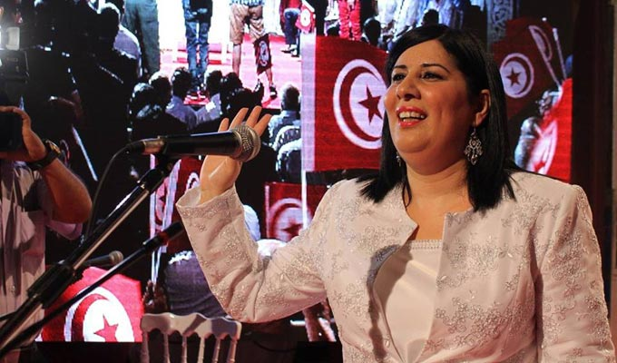

<!DOCTYPE html>
<html lang="en">
<head>
    <meta charset="UTF-8">
    <meta http-equiv="X-UA-Compatible" content="IE=edge">
    <meta name="viewport" content="width=device-width, initial-scale=1.0">
    <title>Document</title>
</head>
<body>
    
</body>
</html>
<H1>Abir Moussi la premiere dame de fer arabe </H1>

<div>Abir Moussi presidente du parti politique destourien libre le plus grand parti opposant en tunisie.</div> Elle presente la belle image de la femme tunisienne : intellectuelle moderne et courageuse
c'est à elle seule qui revient le merite d'eliminer l'obscurantisme devant le silence absolu des autres partis politiques et de certains personnages politiques supposés etre de grand calibre  
cette femme n'a pas la langue dans sa poche elle est une vrai lionne en veille elle attends  ceux qui tentent à faire du mal à la tunisie pour les massacrer. Un chapeau bas pour cette dame qu'on surnomme aujourd'hui la dame de fer. 